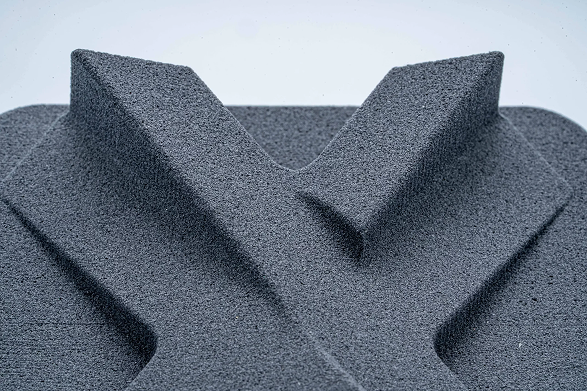
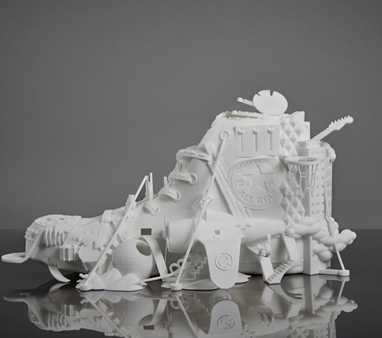
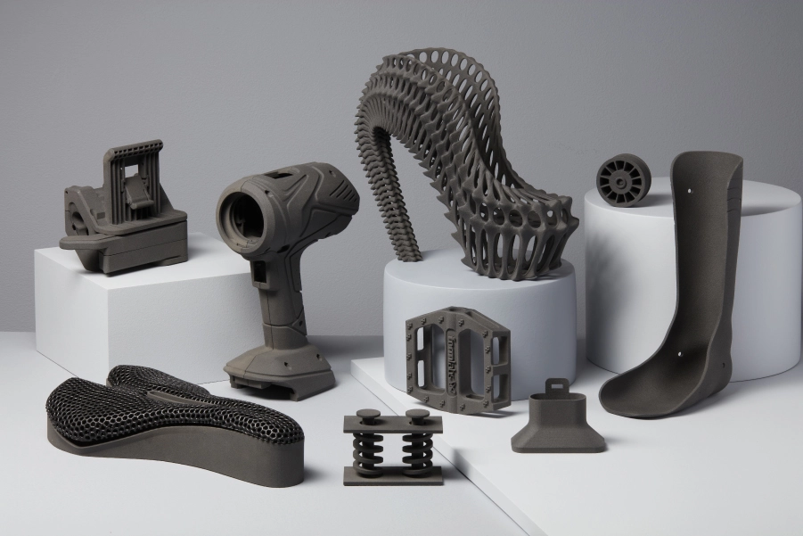

SLS è una tecnica sviluppata da Carl Deckard, un allievo della Texas University, e dal suo professore Joe Beaman alla fine degli anni '80.
Viene comunemente utilizzata per la produzione a breve termine di parti meccaniche finite, grazie alle eccellenti proprietà dei materiali che si possono ottenere.
Sebbene le macchine SLS in metallo siano ancora di dimensioni industriali, le macchine termoplastiche (che di solito stampano in nylon) stanno invece iniziando a diminuire sia nel prezzo che nelle dimensioni.
La sinterizzazione laser selettiva o SLS, comporta l'utilizzo di un laser per riscaldare selettivamente un serbatoio di materiale in polvere - di solito un termoplastico o un metallo - a una temperatura alla quale le particelle di polvere aderiscono insieme.
Questo viene fatto strato per strato, con l'oggetto immerso nella polvere e supportato dal serbatoio. A differenza di altri processi di produzione additiva, come FDM e SLA, SLS non deve utilizzare altre strutture di supporto poiché l'oggetto da stampare è circondato da polvere non sinterizzata.
Per l’ampia selezione di materiali che possono essere utilizzati con questo tipo di stampante 3D, la tecnologia è molto usata per stampare articoli personalizzati. Richiede tuttavia l'uso di laser ad alta potenza, con il risultato che queste stampanti sono piuttosto costose.
Il processo di stampa inizia con la creazione di un file CAD (Computer Aided Design), che deve poi essere convertito in formato .stl con applicazioni speciali. Il materiale utilizzato per la stampa può variare da nylon, vetro e ceramica ad alcuni metalli come alluminio, argento o acciaio.
Perchè la stampa possa avvenire, un contenitore di polvere polimerica viene riscaldato a una temperatura appena inferiore al punto di fusione del polimero.
Successivamente, una lama di ricopertura, o un tergicristallo, deposita uno strato molto sottile di materiale in polvere, in genere di 0.1 mm di spessore, su una piattaforma di costruzione.
Un raggio laser CO2 inizia quindi a scansionare la superficie. Il laser sinterizza selettivamente la polvere e solidifica una sezione trasversale dell'oggetto. Proprio come SLA, il laser viene focalizzato sulla posizione corretta da un paio di galvanometri.
Quando l'intera sezione trasversale viene scansionata, la piattaforma di stampa si sposta in basso di uno spessore di strato in altezza. La lama di ricopertura deposita un nuovo strato di polvere sopra lo strato scansionato di recente e il laser sinterizza la successiva sezione trasversale dell'oggetto sulle sezioni trasversali precedentemente solidificate.
Questi passaggi vengono ripetuti fino a quando tutti gli oggetti sono stati interamente fabbricati. La polvere che non è stata sinterizzata rimane in posizione per supportare l'oggetto, il che elimina la necessità di strutture di supporto.
La SLS (Selective Laser Sintering, o Sinterizzazione Laser Selettiva) è una tecnologia di stampa 3D che utilizza polveri termoplastiche per costruire oggetti strato per strato.
Il materiale più comunemente usato è il poliammide (PA), o nylon, in particolare la poliammide 12 (PA12). I materiali SLS sono in grado di produrre parti durevoli e robuste, spesso utilizzate per prototipazione e produzione di piccoli lotti.
